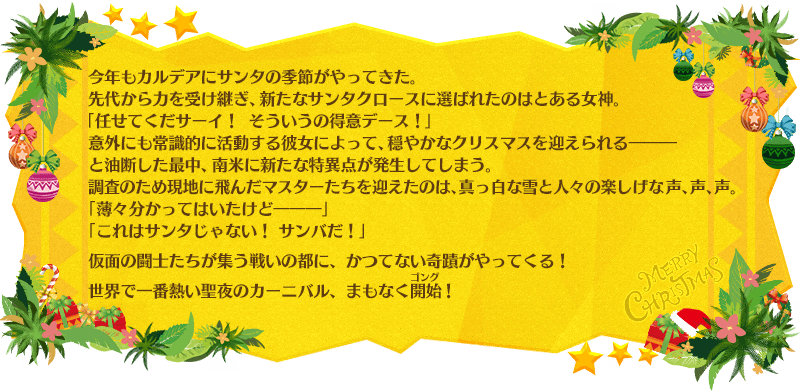

◆活動舉辦期間◆
2018年12月12日(三) 17:00～12月25日(二) 11:59
在2018年12月17日(一)～12月23日(日)的某個時間，為了遊戲伺服器的性能提升會有約5小時的臨時維修。
請注意維修中無法遊玩「Fate/Grand Order」。
詳細時間決定後會另外公告中報告。
【12月19日(三) 17:00追記】
臨時維修已在12月19日(三) 17:00結束。
◆活動概要◆
舉辦期間限定活動「聖誕節2018 聖森巴之夜 ～降雪遺跡與少女騎士～」！
隨著森巴的節拍，新的聖誕老人登場！
在降雪的南國小鎮舞台，環繞聖誕奇蹟的騒亂開始了
本活動中進行主線關卡的話，活動限定Servant「★4(SR)魁札爾・科亞特爾〔森巴／聖誕〕(Ruler)」會以期間限定加入。
更加推進主線關卡，讓活動限定「★4(SR)魁札爾・科亞特爾〔森巴／聖誕〕(Ruler)」正式加入吧！
活動期間中享受故事的主線關卡將逐日開放。
除了以各關卡入手的活動收集道具交換各種報酬外，還可挑戰得到各式各樣道具的抽選！
在各關卡收集活動收集道具，得到聖誕節禮物吧！
※關於真名尚未判明的Servant，透過主線記錄的進行會讓Servant的名稱變化。
◆活動參加條件◆
滿足以下條件的Master才能參加
・通過第2部 第1章「Lostbelt No.1 永久凍土帝國 安娜塔西亞 獸國的皇女」
※不需要通過亞種特異點(從Ⅰ到Ⅳ)。

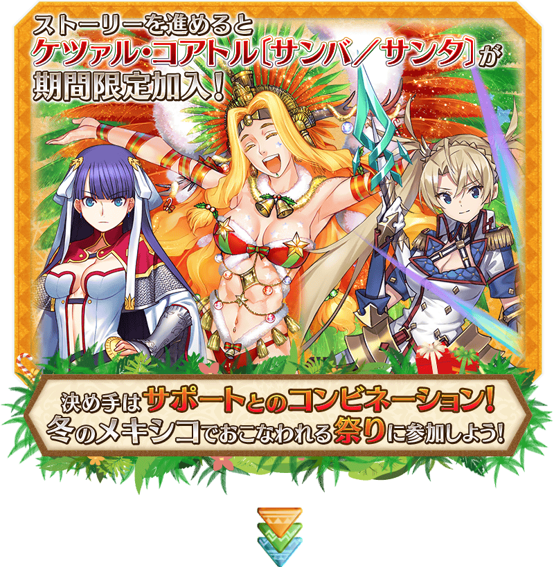
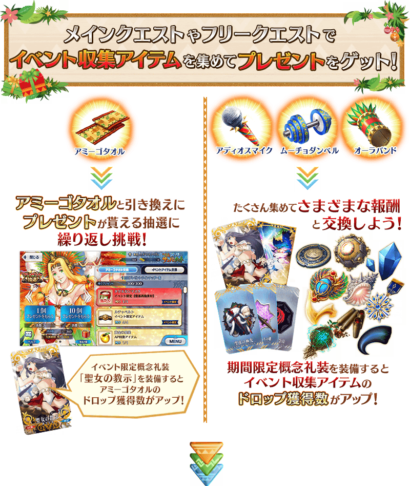
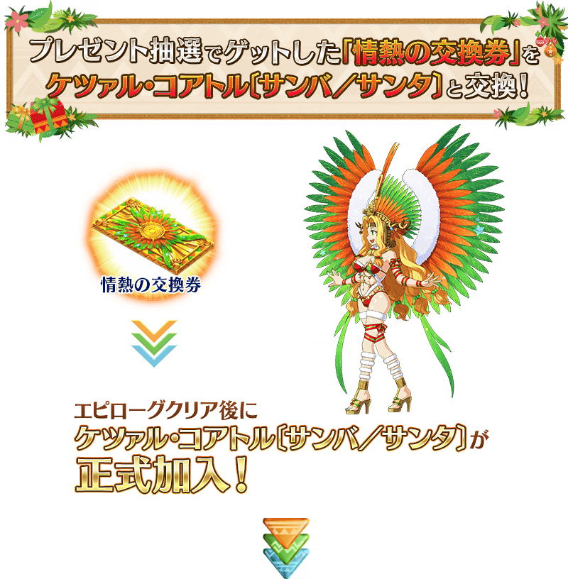
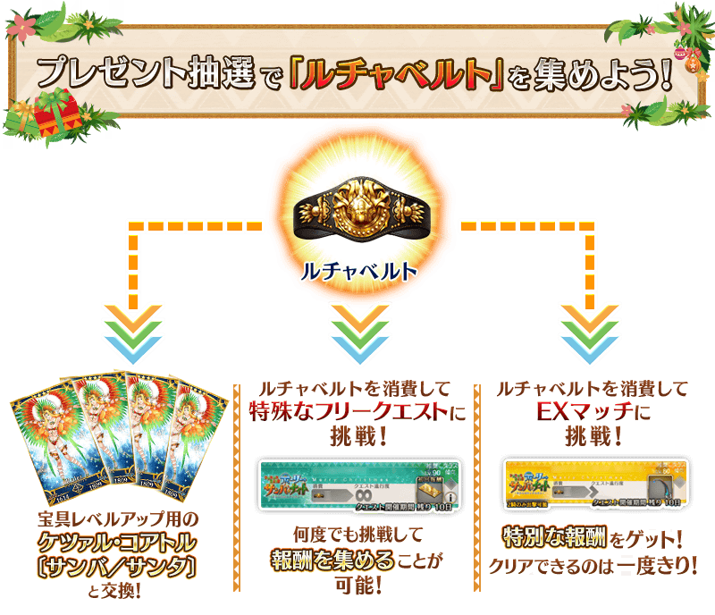
※「鬥爭腰帶」與魁札爾・科亞特爾〔森巴／聖誕〕【寶具強化用】的交換會在魁札爾・科亞特爾〔森巴／聖誕〕正式加入後開放。
享受故事的主線關卡會逐日開放。
通過主線關卡第0天的話，會開放可收集活動收集道具的自由關卡。
之後的自由關卡，靠通過主線關卡來開放。
【主線關卡的舉辦期間】
| 關卡 | 舉辦期間 |
|---|---|
| 序幕 主線關卡第0天 |
12月12日(三) 17:00～ 12月25日(二) 11:59 |
| 主線關卡第1天 | 12月13日(四) 17:00～ 12月25日(二) 11:59 |
| 主線關卡第2天 | 12月14日(五) 17:00～ 12月25日(二) 11:59 |
| 主線關卡第3天 | 12月15日(六) 17:00～ 12月25日(二) 11:59 |
| 主線關卡第4天 | 12月16日(日) 17:00～ 12月25日(二) 11:59 |
| 主線關卡第5天 | 12月17日(一) 17:00～ 12月25日(二) 11:59 |
| 主線關卡第6天 | 12月18日(二) 17:00～ 12月25日(二) 11:59 |
| 主線關卡第7天 後記 |
12月19日(三) 17:00～ 12月25日(二) 11:59 |
【12月19日(三) 17:00追記】
以通過期間限定活動「聖誕節2018 聖森巴之夜 ～降雪遺跡與少女騎士～」特定主線關卡的Master做為對象，開放高難易度的挑戰關卡。
挑戰關卡就算通過後也不會消失，能無數次挑戰，可以變更Servant和概念禮裝的組合後再次挑戰。
※關卡通過報酬、戰利品、Master經驗值、魔術禮裝經驗值、絆點數只可在初次通過時獲得。
◆挑戰關卡開放時間◆
2018年12月19日(三) 17:00～
◆挑戰關卡參加條件◆
滿足以下條件的Master才能參加
・通過期間限定活動「聖誕節2018 聖森巴之夜 ～降雪遺跡與少女騎士～」的後記
◆挑戰關卡初次通過報酬◆
傳承結晶 1個
通過主線關卡第0天後，追加消耗「鬥爭腰帶」消耗來的特殊自由關卡。
特殊自由關卡是執行1次要消耗5個「鬥爭腰帶」，通過後可獲得比普通自由關卡更多的活動收集道具。
特殊自由關卡就算通過後也能無數次挑戰。
※由於「鬥爭腰帶」是在關卡執行時消耗，就算在戰鬥撤退的情況也不會返還消耗的「鬥爭腰帶」。
在12月14日(五) 12:00會追加特殊關卡的EX競賽。
EX競賽的執行需要「鬥爭腰帶」，執行1次最多要消耗8個「鬥爭腰帶」。
關卡限定只可通過1次，在通過時可獲得特別的報酬。
※在執行1次所需的「鬥爭腰帶」數因關卡而異。
※由於「鬥爭腰帶」是在關卡執行時消耗，就算在戰鬥撤退的情況也不會返還消耗的「鬥爭腰帶」。
※一旦通過EX競賽後，無法再次挑戰。
【EX競賽的舉辦期間】
| 關卡 | 必要 鬥爭腰帶數 |
舉辦期間 | 追加條件 |
|---|---|---|---|
| EX競賽1 |
鬥爭腰帶×1 |
12月14日(五) 12:00～ 12月25日(二) 11:59 |
主線關卡 通過第1天 |
| EX競賽2 |
鬥爭腰帶×2 |
12月15日(六) 12:00～ 12月25日(二) 11:59 |
主線關卡 通過第2天 |
| EX競賽3 |
鬥爭腰帶×3 |
12月16日(日) 12:00～ 12月25日(二) 11:59 |
主線關卡 通過第3天 |
| EX競賽4 |
鬥爭腰帶×4 |
12月17日(一) 12:00～ 12月25日(二) 11:59 |
主線關卡 通過第4天 |
| EX競賽5 |
鬥爭腰帶×5 |
12月18日(二) 12:00～ 12月25日(二) 11:59 |
主線關卡 通過第5天 |
| EX競賽6 |
鬥爭腰帶×6 |
12月19日(三) 12:00～ 12月25日(二) 11:59 |
主線關卡 通過第6天 |
| EX競賽7 |
鬥爭腰帶×7 |
12月20日(四) 12:00～ 12月25日(二) 11:59 |
主線關卡 通過第7天 |
| EX競賽8 |
鬥爭腰帶×8 |
12月21日(五) 12:00～ 12月25日(二) 11:59 |
通過 後記 |
超值攻略方法・其1
本活動的期間中，強化「★4(SR)魁札爾・科亞特爾〔森巴／聖誕〕(Ruler)」時的獲得經驗值變成2倍。
是讓剛加入的「★4(SR)魁札爾・科亞特爾〔森巴／聖誕〕(Ruler)」等級一口氣上升的機會！
◆舉辦期間◆
2018年12月12日(三) 17:00～12月25日(二) 11:59
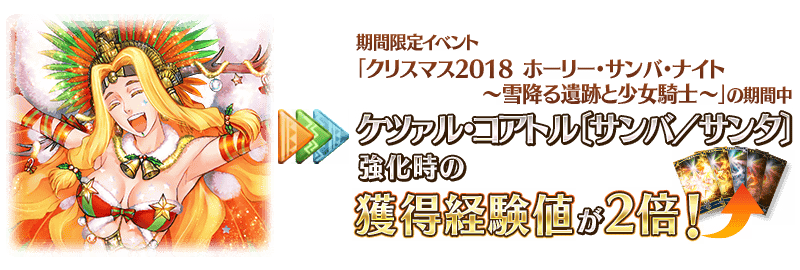
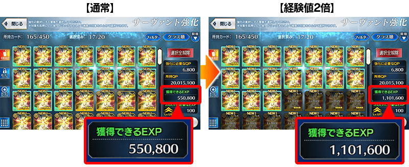
超值攻略方法・其2
本活動的期間中，活動加成篩選器的對象Servant會提升在活動關卡的自身絆點數獲得量！
別錯過絆等級上升的機會！
＞＞ 對象Servant與各自的效果量請在下述表格確認。
◆舉辦期間◆
2018年12月12日(三) 17:00～12月25日(二) 11:59
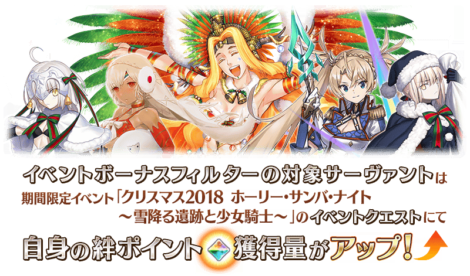
超值攻略方法・其3
本活動的期間中，會對活動加成篩選器賦予「自身的攻擊威力提升」的效果！
強化對象Servant，挑戰活動吧！
＞＞ 對象Servant與各自的效果量請在下述表格確認。
◆舉辦期間◆
2018年12月12日(三) 17:00～12月25日(二) 11:59まで
活動加成的對象Servant與效果量Check！
- 【活動加成篩選器的對象Servant一覧】
(點此處開關表格) -
自身的
攻擊威力絆點數
獲得量職階 稀有度 Servant名 +150% +50% Ruler ★★★★ 魁札爾・科亞特爾
〔森巴／聖誕〕+100% Lancer ★★★★★ 布拉達曼特 Rider ★★★★★ 魁札爾・科亞特爾 ★★★★ 瑪爾大 Ruler ★★★★ 瑪爾大 +50% +20% Saber ★★★★ 柳生但馬守宗矩 Archer ★★★★ 阿提拉・the・San〔誕〕 ★★★★ 凱隆 ★ 阿拉什 Lancer ★★★★ 貞德・Alter・聖誕・Lily ★★★ 庫・夫林 ★★★ 豹人 ★★★ 赫克特 ★★★ 羅慕路斯 Rider ★★★★★ 阿基里斯 ★★★★★ 伊凡雷帝 ★★★★ 阿斯托爾福 ★★★★ 阿爾托莉亞・潘德拉剛
〔聖誕Alter〕★★★ 赤兔馬 ★★★ 反抗軍的Rider ★★ 愛德華・蒂奇 Caster ★★★★★ 安娜塔西亞 ★★★★ 湯瑪斯・愛迪生 ★★★ 查爾斯・巴貝奇 ★★ 漢斯・克里斯蒂安・安徒生 Assassin ★★★★ 卡米拉 ★★★★ 斯卡哈 ★★★★ 不夜城的Assassin ★★ 夏爾＝亨利・桑松 Berserker ★★★★ 阿塔蘭塔〔Alter〕 ★★★★ 黃金國的Berserker ★★★ 大流士三世 ★★ 血斧・埃里克 ★★ 卡利古拉 ★ 靠漫畫了解Berserker Foreigner ★★★★★ 葛飾北齋 ★★★★ 謎之女主角XX ー Shielder ★★★ 瑪琇・基利艾拉特
※自12月8日(六) 15:00，在Servant選擇畫面和Servant強化畫面等，追加「下次活動對象」篩選器。
由於是只顯示於下個舉辦活動活躍Servant的便利功能，敬請活用。
※「★3(R)瑪琇・基利艾拉特」沒有「自身的絆點數獲得量提升」的效果。
※關於真名尚未判明的Servant，透過主線記錄的進行會讓Servant的名稱變化。
超值攻略方法・其4
裝備活動限定概念禮裝會提升「友好毛巾」的掉落獲得數！
裝備可在活動道具交換入手的活動限定概念禮裝「聖女の教示」的話，會提升「友好毛巾」的掉落獲得數提升。
※請注意各關卡的道具掉落率並非100％。
超值攻略方法・其5
裝備期間限定概念禮裝會提升活動收集道具的掉落獲得數！
裝備在聖晶石召喚Pick Up的期間限定概念禮裝「シュヴィブジック・スノー」「リング・ザ・ベル」「バーニング・ライヴシート」的話，會提升活動收集道具「再見麥克風」「超重啞鈴」「氣場腕帶」各自的掉落獲得數。
※請注意各關卡的道具掉落率並非100％。
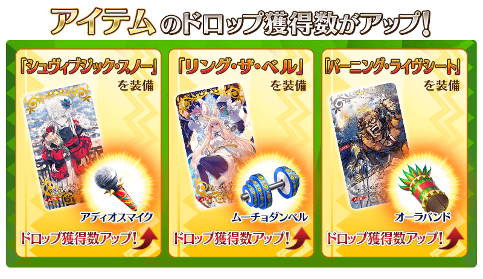
在活動關卡收集「友好毛巾」，於禮物抽選交換禮物吧！
禮物的交換是以抽選方式進行。
禮物的陣容會各放入1個大獎道具。
抽到大獎道具，點擊「禮物重置」的話，會補充新的大獎道具，切換到下個陣容。
放入大獎道具禮物的陣容有10次份！
獲得大獎道具，沒有吸引目光的禮物就點擊「禮物重置」，補充大獎道具吧！
※第11次以後不會補充大獎道具及「黃金果實」「白銀果實」。
※禮物陣容中的活動收集道具「鬥爭腰帶」除了可魁札爾・科亞特爾〔森巴／聖誕〕【寶具強化用】和素材外，收集的話可執行特殊的自由關卡。
◆交換期間◆ 2018年12月12日(三) 17:00～12月31日(一) 11:59 ※交換期間結束後「友好毛巾」會消失。
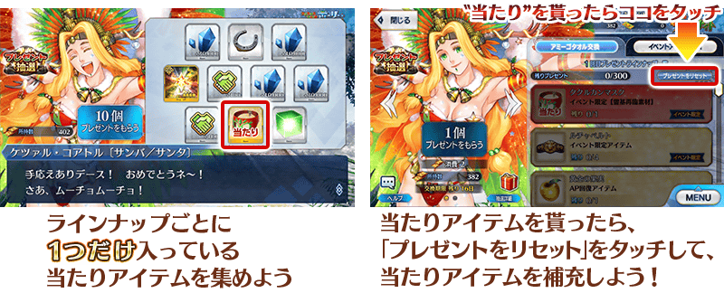
| 陣容次數 | 大獎道具 |
|---|---|
| 第1～4次 |
活動限定靈基再臨素材「庫庫爾坎面具」 |
| 第5次 | 熱情交換券 |
| 第6次 | 傳承結晶 |
| 第7～10次 | 英靈結晶・日輪之芙芙ALL★4(ATK) |
| 第11次以後 | 無 (入手全道具才能禮物重置) |
◆禮物陣容◆
|
【大獎道具】 【活動収集道具】 【技能強化＆靈基再臨素材】 【技能強化素材】 【其他道具】 |
活動收集道具可自點擊管理室(ターミナル)畫面右上「活動報酬」的「活動道具交換」畫面，交換以下的道具。
※英靈結晶・流星之芙芙ALL★4(HP)、500,000QP的交換會在通過期間限定活動「聖誕節2018 聖森巴之夜 ～降雪遺跡與少女騎士～」主線關卡後開放。
◆交換期間◆
2018年12月12日(三) 17:00～12月31日(一) 11:59
※交換期間結束後「鬥爭腰帶」「再見麥克風」「超重啞鈴」「氣場腕帶」「友好毛巾」「熱情交換券」會消失。
◆能用鬥爭腰帶交換的道具◆
|
【活動限定Servant】 【靈衣開放權】 【其他道具】 |
◆能用再見麥克風交換的道具◆
 |
【活動限定概念禮裝】 【活動報酬指令紋章】 【技能強化＆靈基再臨素材】 【靈基再臨素材】 【其他道具】 |
◆能用超重啞鈴交換的道具◆
|
【活動限定概念禮裝】 【活動報酬指令紋章】 【技能強化＆靈基再臨素材】 【靈基再臨素材】 【其他道具】 |
◆能用氣場腕帶交換的道具◆
|
【活動限定概念禮裝】 【活動報酬指令紋章】 【技能強化＆靈基再臨素材】 【其他道具】 |
| 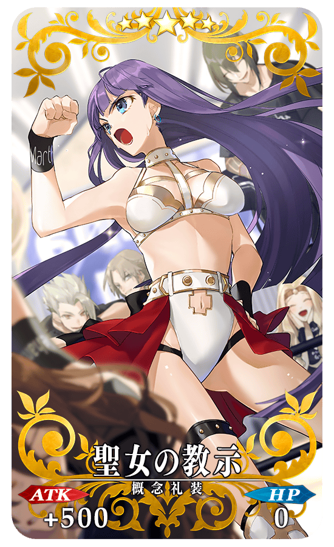 |
★★★★★SSR |
|
【活動限定】 |
| 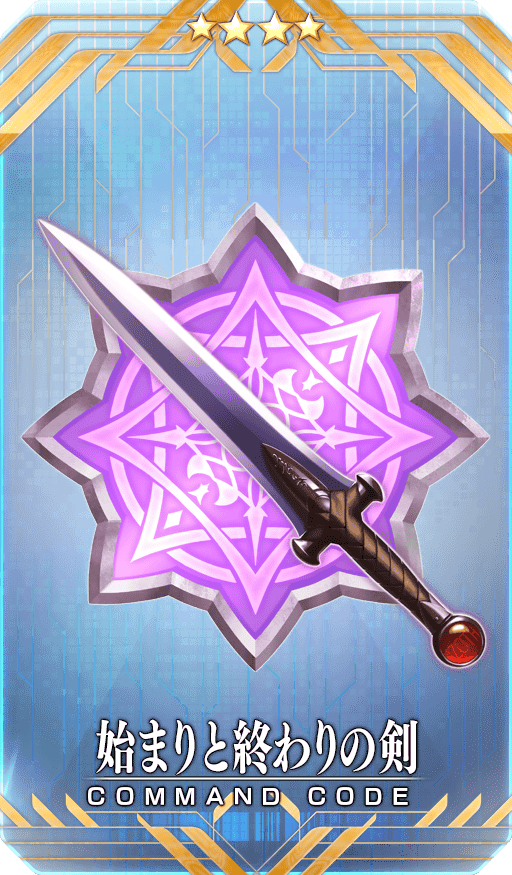 |
★★★★SR |
| 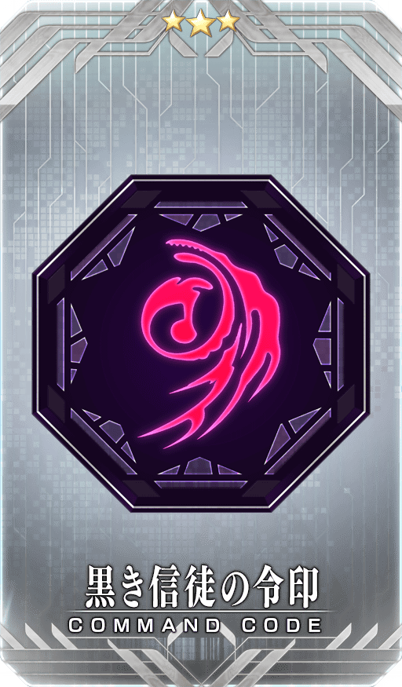 |
★★★R |
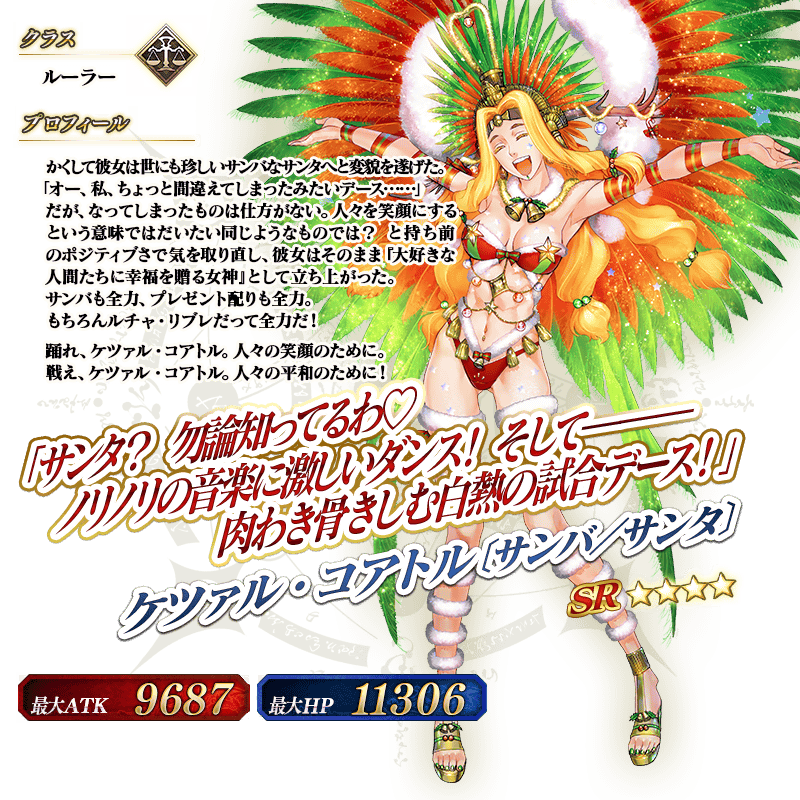
◆靈基再臨◆
使用只能在「禮物抽選」入手可能的「庫庫爾坎面具」，重複4次靈基再臨的話，卡面會有所變化！
※魁札爾・科亞特爾〔森巴／聖誕〕不會隨靈基再臨使戰鬥角色的外觀變化。
做為期間限定活動「聖誕節2018 聖森巴之夜 ～降雪遺跡與少女騎士～」的報酬，「★4(SR)魁札爾・科亞特爾〔森巴／聖誕〕」的靈衣開放權登場！
本次追加的魁札爾・科亞特爾〔森巴／聖誕〕靈衣是只有外觀的變化，語音沒變化的「簡易靈衣」。
1種靠活動收集道具的交換、1種靠在2018年12月14日(五) 12:00以後追加EX競賽的通過報酬，可得到合計2種靈衣開放權！
另外，請注意魁札爾・科亞特爾〔森巴／聖誕〕的靈衣開放權超過「聖誕節2018 聖森巴之夜 ～降雪遺跡與少女騎士～」交換期間就無法入手。
【12月19日(三) 20:00追記】
在12月19日(三) 17:00，魁札爾・科亞特爾〔森巴／聖誕〕的第2個簡易靈衣追加到「靈衣開放」「靈衣一覧」畫面。可靠通過在12月21日(五) 13:00開放的EX競賽8入手。
| 靈衣開放權名 | 追加時間 | 獲得條件 |
|---|---|---|
| ルーダ・マスカラ | 12月19日(三) 17:00 | 通過12月21日(五) 12:00 開放的EX競賽8 |
想開放新追加的「★4(SR)魁札爾・科亞特爾〔森巴／聖誕〕」簡易靈衣的話，除了靈衣開放權外必須再加上一些開放條件。
◆追加時間◆
2018年12月12日(三) 17:00～
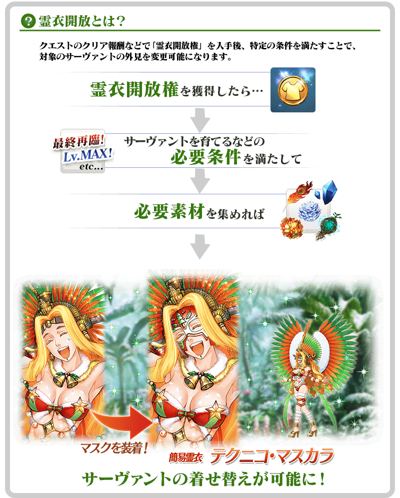
※「靈衣開放」後自動切換戰鬥角色和圖示。若想回到「靈衣開放」前的狀態和變成其他再臨階段的情況，可自Servant詳細畫面變更。
※語音與「靈衣開放」前的狀態相同。
※透過「靈衣開放」只變更Servant的外觀，職階和能力等沒有變化。

「靈衣開放」是自強化畫面進行。
【12月12日(水) 18:00追記】
介紹魁札爾・科亞特爾〔森巴／聖誕〕平常時與簡易靈衣「テクニコ・マスカラ」時2種類的寶具演出！
在「Fate/Grand Order」官方網站內的公告中公開了「★4(SR)魁札爾・科亞特爾〔森巴／聖誕〕」的寶具演出。敬請確認。
在支援選擇畫面追加職階相性顯示！
在切換支援選擇畫面的職階按鍵追加了解職階相性的顯示。
◆追加時間◆
2018年12月12日(三) 17:00～
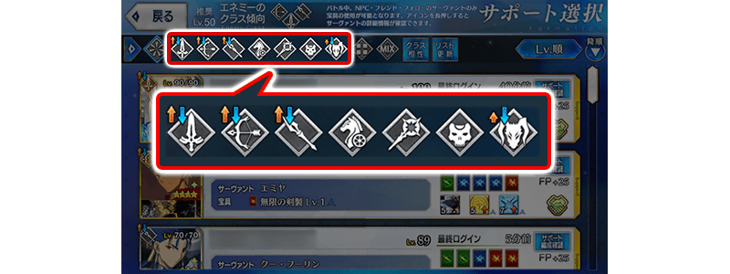
在移動到支援選擇畫面時，追加自動選擇有利職階的功能！
在移動到支援選擇畫面時，追加自動選擇在對象關卡有利職階的功能。
※有利職階為不明的關卡情況會選擇ALL圖示。
※此功能可在遊戲選項設定ON/OFF。
◆追加時間◆
2018年12月12日(三) 17:00～
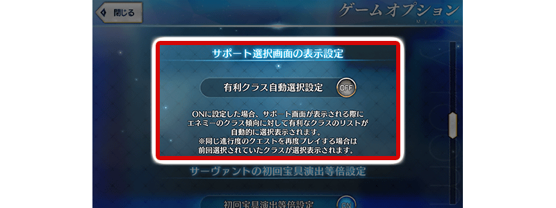
在可於活動關卡使用的活動加成篩選器，追加只顯示裝備已最大解放概念禮裝支援的功能。
另外，在支援選擇畫面中，變得可只顯示裝備持有活動加成概念禮裝的支援。
◆追加時間◆
2018年12月12日(三) 17:00～
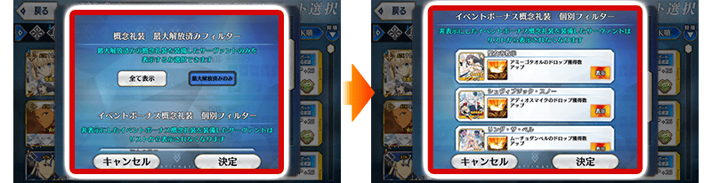
選擇「MIX」鍵的話，變得可選示跨越支援欄位的所有支援一覧。
另外，透過與篩選器功能組合，變得容易找到活動加成對象Servant。
◆追加時間◆
2018年12月12日(三) 17:00～
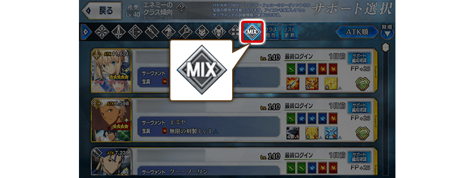
在Servant強化選擇強化素材時，追加從事先設定條件之中自動選擇可在強化使用素材的功能。
◆追加時間◆
2018年12月12日(三) 17:00～
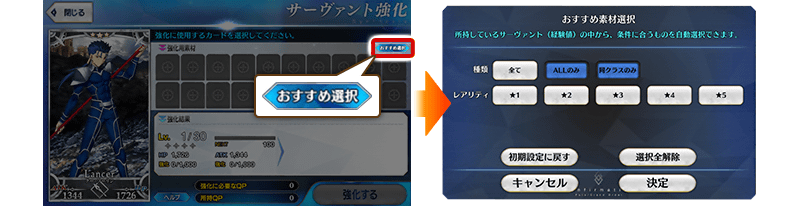
在「靈基保管室」「靈基變還(販賣)」畫面，增加可選擇數至各畫面的最大數。
◆追加時間◆
2018年12月12日(三) 17:00～
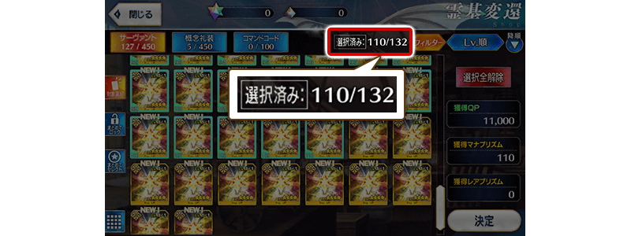
在Servant選擇畫面等使用篩選器功能時，修改成篩選器鍵的顏色會變。
◆追加時間◆
2018年12月12日(三) 17:00～
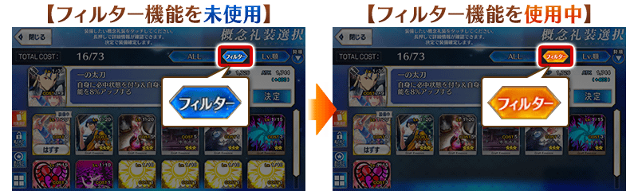
在Servant的真名判明後，戰鬥語音被固定成真名判明後語音，變得可選擇判明前與判明後的戰鬥語音。
◆追加時間◆
2018年12月12日(三) 17:00～
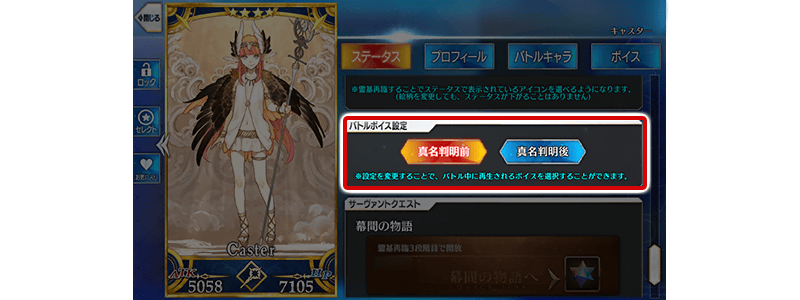
做為戰利品入手的稀有度★4(SR)以下經驗值卡，變得可自動變還(販賣)。
自動變還的經驗值卡稀有度，可從關卡執行時的隊伍確認畫面設定。
◆追加時間◆
2018年12月12日(三) 17:00～
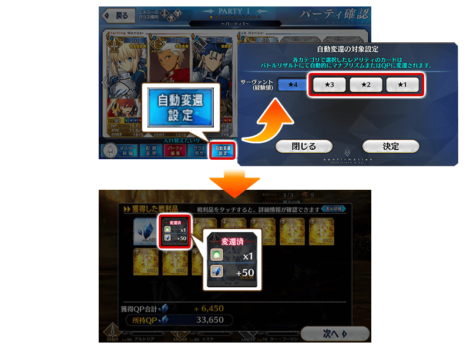
在隊伍編成、關卡執行時的隊伍確認、支援編成的各畫面中，點擊隊伍名的顯示欄位候變得也能變更隊伍名可能。
另外，以往的隊伍名變更鍵位置，變更在點擊隊伍編集點擊後顯示的對話框內。
◆追加時間◆
2018年12月12日(三) 17:00～
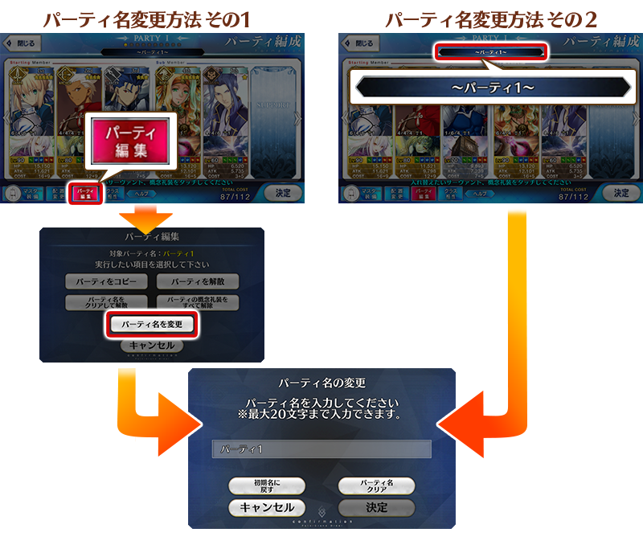
絆等級上限開放用道具「カルデアの夢火」，追加到達文西工房的「稀有稜鏡交換」。
◆追加時間◆
2018年12月15日(六) 23:00～
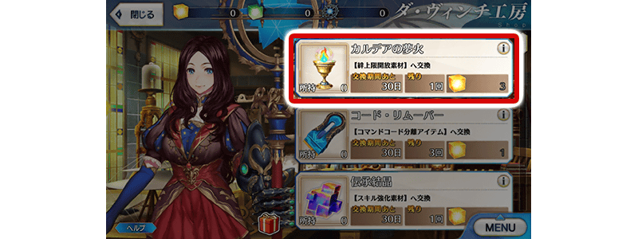
| 追加道具 | 能交換 次數 |
1次所需的 稀有稜鏡數 |
|---|---|---|
| カルデアの夢火 | 1次 | 3個 |
其他還有，期間限定「聖誕節2018Pick Up召喚(每日交替)」同時舉辦！
關於詳情請自下述橫幅確認。